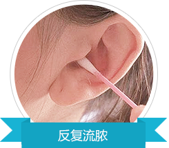
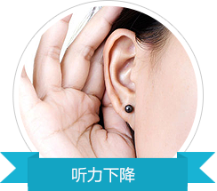
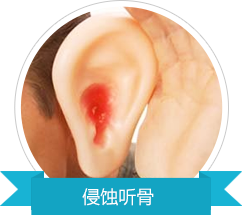

免费热线：021-52715221
医院地址：上海市普陀区大渡河路1933号(芝川路口)
沪ICP备10036551号-18
 沪公网安备 31010702001274号
沪公网安备 31010702001274号
中耳炎反反复复 生活苦恼不堪？
看得见的是症状，看不见的是隐患
- 
- 
- 
方法不当 炎症无恙 中耳反受损伤
药物治疗和手术治疗的本质区别
刀尖上的舞蹈——微创内窥镜治疗技术
不仅是患者追求的效果，也是耳科医生努力的方向
带你 深入挖掘中耳炎治疗的细节
手术治疗中耳炎的成功与否都藏在细节之中
显微镜下
操作
无切口
耳内切口
副主任医师
亲诊
使用可吸收
材料
术后康复
指导
定期来院
复查
医保报销
85%-92%
显微镜下操作
Operating under a microscope
耳鼻喉健康的守护者
宏康医师带着一份责任，为病人提供优质的医疗技术和服务
拒绝中耳炎反复复发？术后护理是关键
术后3个月的恢复期决定着中耳炎是否会再次复发
免费热线：021-52715221
医院地址：上海市普陀区大渡河路1933号(芝川路口)
沪ICP备10036551号-18
沪公网安备 31010702001274号